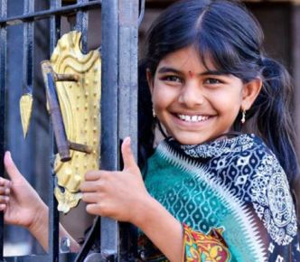

Lavanya
“I want to be the Prime Minister.”
It is hard to miss the sparkle in Lavanya’s eyes when she says this. Full of mischief and fun now, Lavanya did not have a very happy childhood initially. Abandoned by her father at birth, Lavanya lost her mother too, in an accident seven years ago. But the little girl...